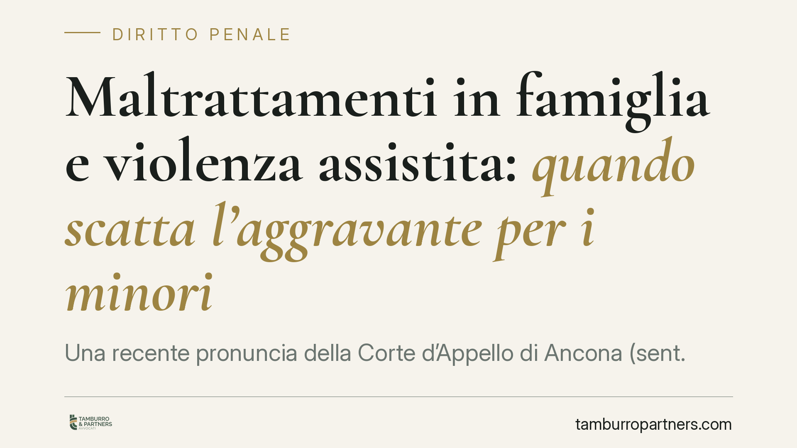

Maltrattamenti in famiglia e violenza assistita: quando scatta l'aggravante per i minori
Una recente pronuncia della Corte d'Appello di Ancona (sent. 112/2026) ribadisce due principi: il reato di maltrattamenti in famiglia sussiste indipendentemente dalla capacità di resistenza della vittima e si aggrava quando le condotte avvengono davanti a un minore, bastando la percezione del clima di terrore. Un chiarimento che incide tanto sul processo penale quanto sui giudizi di separazione e affidamento.

Il fatto e il principio affermato
La Corte d'Appello di Ancona torna su un tema ricorrente nelle aule: i limiti e le aggravanti del reato di maltrattamenti contro familiari e conviventi, previsto dall'art. 572 del Codice penale.
Due i passaggi rilevanti. Primo: il reato sussiste a prescindere dalla capacità della vittima di opporre resistenza. Non serve dimostrare che la persona offesa non potesse difendersi; conta il sistematico assoggettamento. Secondo: la presenza di un minore durante le violenze integra l'aggravante, ed è sufficiente che il minore percepisca il clima di sopraffazione, anche senza assistere al singolo episodio.
Inquadramento normativo
L'art. 572 c.p. punisce chi maltratta una persona della famiglia o comunque convivente. Si tratta di un reato abituale: non basta il singolo episodio, serve una condotta reiterata nel tempo che generi uno stato di sofferenza fisica o psicologica duratura. È questa la differenza con le percosse (art. 581 c.p.) o le lesioni (art. 582 c.p.), che puniscono invece il fatto singolo. Un ceffone isolato, per quanto grave, non è di per sé maltrattamento; lo diventa quando si inserisce in una sequenza di condotte vessatorie.
Sull'aggravante per la presenza di minori occorre precisione. L'art. 572, secondo comma, c.p. prevede l'aumento di pena quando il fatto è commesso in presenza o in danno di persona minore. La previsione è stata introdotta nel corpo dell'articolo dalla L. 69/2019 (il cosiddetto "Codice Rosso") e la disciplina delle circostanze è stata poi incisa dal D.Lgs. 150/2022 (Riforma Cartabia). È dunque più corretto parlare di "secondo comma dell'art. 572 c.p., come modificato", verificando caso per caso la formulazione applicabile *ratione temporis*.
Sul punto della cosiddetta violenza assistita si registra un orientamento della giurisprudenza di legittimità (v. Cassazione penale, sez. VI, in diverse pronunce sul tema, con status da verificare rispetto al caso concreto) secondo cui il minore spettatore delle violenze subisce comunque un pregiudizio penalmente rilevante. Il dato va però ancorato alla specifica vicenda: non ogni richiamo generico a un "orientamento consolidato" regge in giudizio senza estremi precisi.
Due piani distinti: minore spettatore e minore persona offesa
È essenziale non confondere due posizioni diverse.
Il minore spettatore è colui che assiste, anche solo percependone il clima, alle violenze rivolte ad altri (tipicamente un genitore). Qui il minore rileva come elemento che aggrava la pena del reato commesso contro la vittima adulta.
Il minore persona offesa è invece destinatario diretto delle condotte lesive. In questo caso non siamo davanti a una circostanza aggravante, ma a un'autonoma posizione di vittima del reato.
Un esempio chiarisce la distinzione. Se il padre insulta e percuote abitualmente la madre mentre il figlio è in casa e percepisce le urla, il figlio è spettatore e scatta l'aggravante. Se le condotte vessatorie colpiscono anche il figlio — minacce, umiliazioni, privazioni dirette — il minore diventa persona offesa a pieno titolo, con conseguenze diverse sul piano processuale e risarcitorio.
Implicazioni pratiche
L'accertamento penale non resta isolato. Produce effetti pesanti sui giudizi civili di separazione, divorzio e affidamento.
Un procedimento per maltrattamenti incide sulla valutazione dell'idoneità genitoriale e può orientare il Tribunale verso l'affidamento esclusivo, la limitazione della responsabilità genitoriale o la regolamentazione protetta degli incontri. I servizi sociali e il Tribunale per i minorenni entrano spesso in scena proprio a partire dalle segnalazioni emerse in sede penale.
Per chi subisce le condotte, documentare tempestivamente è decisivo. Per chi è indagato, la gravità delle ricadute — penali e familiari insieme — impone una gestione tecnica fin dalle prime fasi.
Cosa fare in concreto
- Conserva ogni elemento utile: referti medici, certificati di accesso al pronto soccorso, messaggi, testimonianze. Raccogli in modo ordinato e datato.
- Non acquisire prove in modo illecito: registrazioni di ambienti altrui, accessi non autorizzati a dispositivi o profili possono essere inutilizzabili e, a loro volta, costituire reato.
- Valuta la denuncia o la querela con consapevolezza dei tempi e degli effetti anche sul fronte familiare.
- Coordina il piano penale e quello civile: separazione e affidamento vanno impostati tenendo conto del procedimento penale in corso.
- Rivolgiti tempestivamente a un professionista, prima di assumere iniziative che possano pregiudicare la propria posizione.
---
*Contributo informativo a cura di Tamburro & Partners - Avv. Giuseppe Tamburro. Non costituisce parere legale.*
Ogni condominio ha una storia a sé.
Se gestisci un'amministrazione e vuoi un confronto su una specifica questione condominiale, scrivi allo studio. Ti rispondiamo entro un giorno lavorativo.